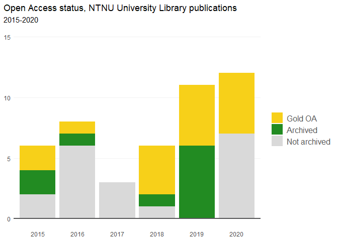

rcristin is a simple R interface to query the API for the Cristin database for Cristin results, with error handling and automatic pagination. See full documentation of the package at https://henrikkarlstrom.github.io/rcristin/index.html.
rcristin (currently) consists of two functions: one for retrieving registered Cristin results and one for their associated author affiliation information. Both functions always return a data frame.
Installation
You can install the development version from GitHub with:
# install.packages("devtools")
devtools::install_github("henrikkarlstrom/rcristin")Example
A simple query for academic publications from a unit, which is stored as a data frame:
library(rcristin)
## get Cristin results from NTNU's University Library
ntnuub <- get_cristin_results(
unit = "194.14.30.0",
published_since = 2015
)This can now be used for all sors of bibliometric analyses. Here is a table of the ten most common publication categories for the University Library of NTNU:
table <- dplyr::count(ntnuub, category_name_en, sort = TRUE)
knitr::kable(head(table, 10), col.names = c("Cristin category", "Number of Cristin posts"))| Cristin category | Number of Cristin posts |
|---|---|
| Lecture | 99 |
| Website (informational material) | 47 |
| Academic lecture | 46 |
| Interview | 41 |
| Popular scientific lecture | 38 |
| Academic article | 27 |
| Other presentation | 19 |
| Poster | 17 |
| Popular scientific article | 12 |
| Museum exhibition | 11 |
And here is a graph of the Open Access status of the academic publications of the library:
# Filtering out the non-academic results
ntnuub <- ntnuub[ntnuub$category_code %in% c(
"ACADEMICREVIEW", "ANTHOLOGYACA", "ARTICLE",
"CHAPTERACADEMIC", "MONOGRAPHACA"), ]
# Giving the OA categories better names
ntnuub$open_access <- dplyr::recode(ntnuub$open_access,
none = "Not archived",
green = "Archived",
gold = "Gold OA")
# Plotting
ggplot2::ggplot(
data = ntnuub,
ggplot2::aes(
x = year_published,
fill = forcats::fct_relevel(
open_access, c("Gold OA", "Archived", "Not archived"))
)
) +
ggplot2::geom_bar() +
ggplot2::geom_hline(yintercept = 0,
size = 1,
colour = "#565657") +
ggplot2::labs(
title = "Open Access status, NTNU University Library publications",
subtitle = "2015-2020",
x = NULL,
y = NULL
) +
ggplot2::theme_minimal() +
ggplot2::theme(
plot.title.position = "plot",
legend.title = ggplot2::element_blank(),
legend.text = ggplot2::element_text(size = 12,
color = "#565657"),
axis.ticks = ggplot2::element_blank(),
panel.grid.minor = ggplot2::element_blank(),
panel.grid.major.y = ggplot2::element_line(color="grey95"),
panel.grid.major.x = ggplot2::element_blank(),
panel.background = ggplot2::element_blank()
) +
ggplot2::ylim(0, 15) +
ggplot2::scale_fill_manual(
values = c("#f7d019", "forestgreen", "grey85")
)